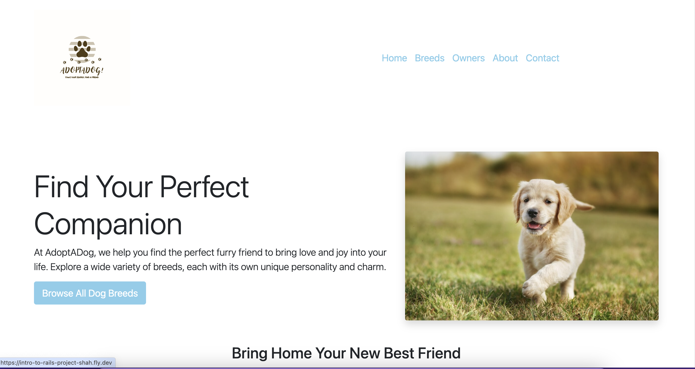
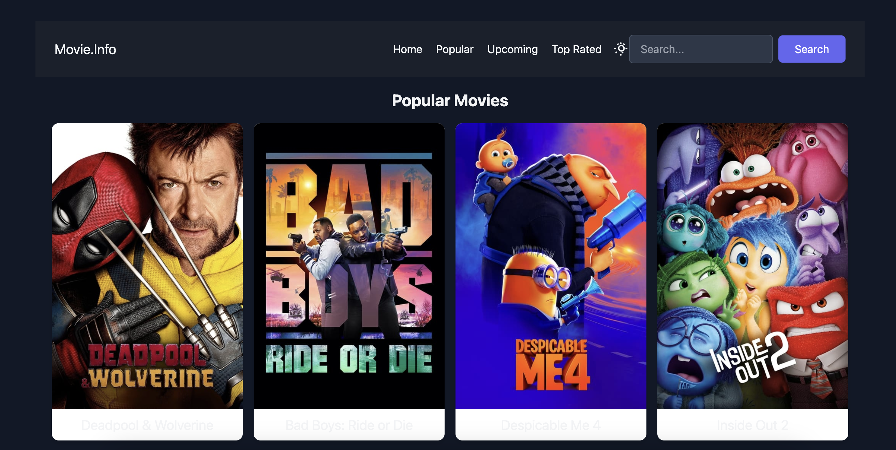
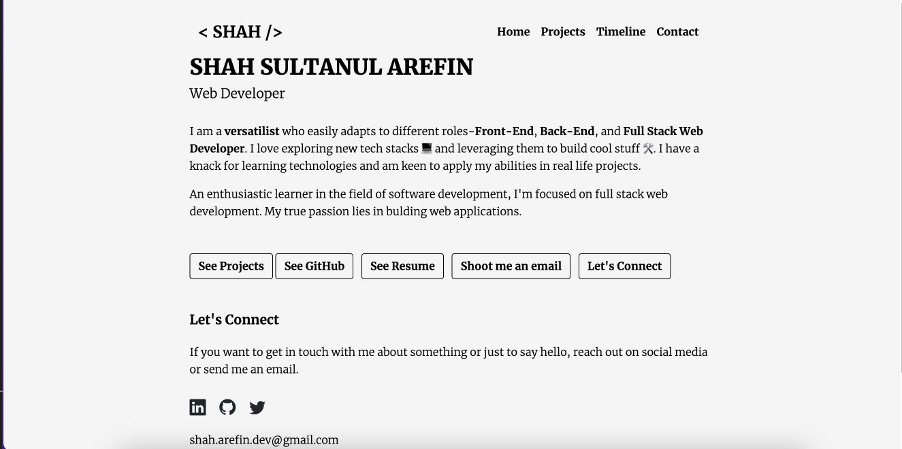
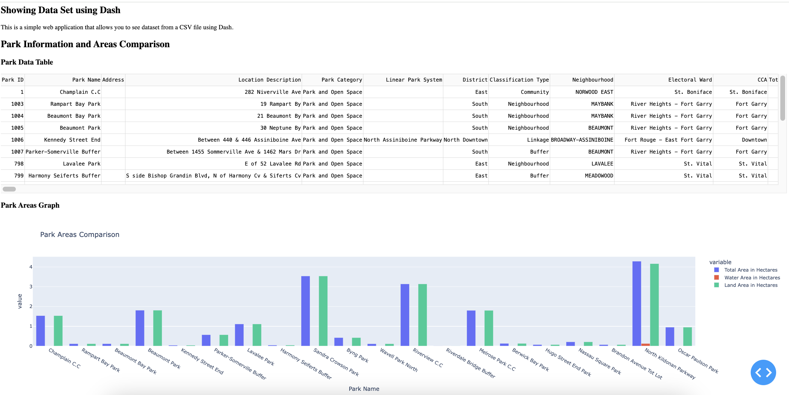

Projects

AdoptADog
A web application designed to streamline the dog adoption process, featuring breed information and search functionality.

Movie.Info
A web application providing information about popular, top-rated, and upcoming movies, with search functionality.

Personal Portfolio Website
A responsive, multi-page personal portfolio website showcasing skills, projects, and professional experience.

Interactive API with Flask and Dash
An interactive application featuring advanced functionalities and a user-friendly interface.